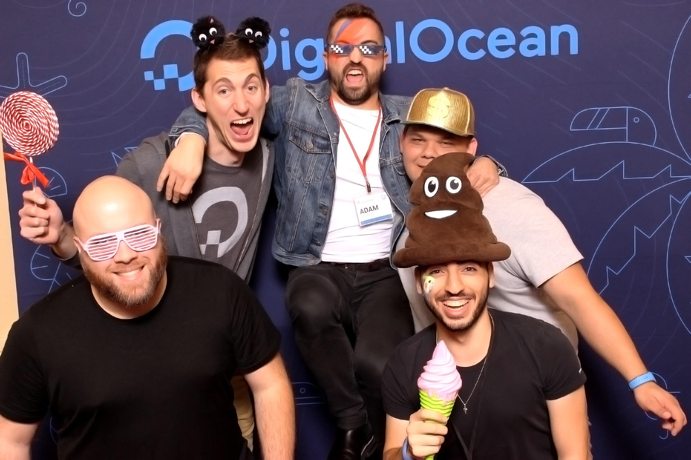

Exploring New Waters: A Recap of My First Year at DigitalOcean¶
Another year come and gone, and what an adventure it was but I'm happy to say I have successfully completed my first year at DigitalOcean. Come, gather round and listen to the tale of a career change, being a Developer Advocate amidst a global pandemic, and everything else 2020 had to throw at me.
So this blog post is a few months late. I wanted to post it on the anniversary of my first day at DigitalOcean, however between Hacktoberfest, deploy by DigitalOcean, and the launch of App Platform October and November were very busy for me. However, now that things have calmed down I can finally sit down and reflect on my first year at DigitalOcean as a Developer Advocate.
How I Arrived at DigitalOcean¶
On October 1, 2019 I joined DigitalOcean as a Developer Advocate. This was my first step into an advocacy role after spending roughly four years professionally as a Software Engineer/Site Reliability Engineer1. This was going to be my third role in under five years and I was feeling slightly down that I hadn't managed to stay at one place for longer than two and half years. I left my first role for reasons that honestly, looking back, I could have probably gotten over. But I was young and dumb(er) and the sudden shift in company focus, team changes, and the inability to decide on what we wanted to be triggered my fight or flight reflex and I left. My second job, the job I left to join DigitalOcean, was.... interesting to say the least. I learned so much about the Cloud, Availability, Scaling, and the list goes on. The Cloud platform I got to work on and maintain is still, to this day, one of the most impressive I've ever seen. However, the culture among my org was slightly less toxic than a nuclear waste dump. Without going into too much detail it sucked, I hated it, and became ever more depressed the longer I stayed there. So, I started looking for a new gig. While being miserable at my previous job I learned a neat little trick. If I got accepted to speak at a conference my boss would give me the time off to attend the conference. He wouldn't pay for the conference, but honestly at that point anything I could do to get away was worth it. So, I started submitting talks and getting accepted to many different conferences across the continent. It was during this time that I became more aware of the Developer Advocate role and what it was. I applied for a handful of Developer Advocate roles, as well as some SE/SRE roles. While the idea of being an advocate was enticing, I wasn't quite sure if I wanted to take that step. And of course, fate would position me where I had to make that exact decision. I received offers for both a Developer Advocate role and a Site Reliability Engineer role at two different companies, both of whom I was super excited to work at. I flip flopped at lot on which role I wanted to take but, in the end, I took the role at DigitalOcean as a Developer Advocate. It was a hard decision, but I had become so disenfranchised with engineering in general I thought it would be a good choice to try something new. And, thankfully, I was correct.
How This Year Went: October 1, 2019 - December 18, 2020¶
DigitalOcean prides itself on being a remote friendly company. When I started almost 70% of the company was fully remote and my role was going to be remote. That being said, most new sharks start their first week in the New York City office. I had never been to NYC so it was excited. Due to current events coming up in the DigitalOcean company calendar my manager was able to allow me to start working the Monday after I stopped working at my previous job. This was due to the fact that DigitalOcean was going to be having its global company all hands at Disney World in the middle of October and for me to go I needed to start within a window. I agreed and was able to convince my boss to let me have the week off after my first week to kind of recuperate from my previous job. I fly out to NYC and get put up in one of the company's corporate apartments. Due to a majority of the company being remote these apartments were kept so employees cannot have to worry with the hassle of a hotel when they come into town. I get to the apartment and the first person I meet is Adam Harder, the new Video Marketing Manager. Later that evening my manager Eddie Zaneski arrived at the apartment since he was also spending the week in NYC. The next day we go to the office and I go through the typical first day things. This is where things change. I am packing up my stuff when my manager Eddie comes by and says "Are you ready to work an event?". Turns out that night was the kickoff night for Hacktoberfest and I was going to help run the event. It was a lot of fun and I must say, that was the most interesting first day I've ever experienced. Fast forward a few weeks and I'm off to Disney World for our company all hands. I got to meet so many people in the company, including all of my teammates, and just had the best time ever. My team was amazing. We got to take team pictures, hang out, plan what we wanted to accomplish for the next year and just get to bond. The Developer Advocate team was finally fully staffed and ready to go. I leave Disney beyond excited for what the future holds. We continue through the year as I settle in and meet more and more people in the company. We get started in 2020 and I was excited to get to work conferences. One of the main reasons I joined was to get to travel and meet developers all over the world......and we see how that all turned out. I am happy to say I did get to work one conference this year. I attended Sunshine PHP in Miami, Florida in the first week of February and I loved it.

Unfortunately, these happy times were short lived. Due to changes made within the company, the Marketing org, and people deciding to pursue options elsewhere I was left the only remaining member of my original team. I'm not going to lie, it was kind of a blow. My previous team was amazing and to finally find a place that felt welcoming just to have it disappear was a huge downer. I contemplated if I should remain an advocate and even at the company. I decided to stay because I had just gotten started and hadn't even been able to actually do much Developer Relations work. I also wanted to see the new direction that my team was going to take. And on top of all of this, the world was grappling to deal with a global pandemic the likes of which hadn't been seen for a century. What was Developer Relations and Community going to look like when I couldn't physically be with my Community? Luckily, I fortunate enough that my new manager was someone I trusted within the company and had been a part of my previous extended team. After that we picked up another Developer Advocate internally and then a contractor to help us with the logistical parts of the role and suddenly, I had a team again.And honestly, I'm so glad I stayed. While I miss my old team, my current team is amazing. The direction, strategy, and charter of my team is amazing. We have measurable goals to work towards and I get to work with some of the best in Developer Relations. From product releases to Tech Talks (webinars) to virtual conferences (both attending and hosting) to Hacktoberfest this year has been a new slate for Developer Relations at DigitalOcean. I feel that we were able to navigate the pandemic situation and brought new life to virtual events at a level that hadn't been seen before. I'm incredibly grateful for my team, my extended teams, the Marketing organization and DigitalOcean as a whole for making a challenging year much more enjoyable that it could have been.
2020 Stats¶
So what all did I do this year? Here are the stats for my accomplishments of 2020:
- Code:
- Added the DOCR resource and data source for the DigitalOcean Terraform Provider.
- Wrote multiple sample example applications for DigitalOcean's App Platform:
- Wrote multiple functional applications for DigitalOcean's App Platform
- Hacktoberfest Repo Label/Topic Manager
- Terraform Sample Architectures for DigitalOcean
- Education Tool for setting up a lab type environment using Droplets DigitalOcean Classroom
- Content:
- Wrote 6 Tutorials for DigitalOcean's Community Site
- How To Use Visual Studio Code for Remote Development via the Remote-SSH Plugin
- How To Create A Minecraft Server On Ubuntu 18.04
- How To Create A Minecraft Server On Ubuntu 20.04
- How To Build a Slackbot in Python on Ubuntu 20.04
- How To Deploy a Django App on App Platform
- How To Deploy a Flask App Using Gunicorn to App Platform
- Produced the following videos for DigitalOcean
- Wrote 6 Tutorials for DigitalOcean's Community Site
- Community:
- Presented at the following conferences:
- PyCon 2020 - Building Docs like Code: Continuous Integration for Documentation
- Open Source Summit - SLIs, SLAs, SLD’OHs! Learning About Service Uptime from Homer Simpson
- PyOhio - There's a Snake in the Birdhouse! Building a Python Culture at Vrbo
- EuroPython - There's a Snake in the Birdhouse! Building a Python Culture at Vrbo
- PyBay - There's a Snake in the Birdhouse! Building a Python Culture at Vrbo
- PyTexas - There's a Snake in the Birdhouse! Building a Python Culture at Vrbo
- PyTexas - How to Build and Deploy Your First Python Slackbot on DigitalOcean's App Platform
- Presented at the following meetups:
- Chicago Python - SLIs, SLAs, SLD’OHs! Learning About Service Uptime from Homer Simpson
- IndyPy - Infarstructure as Code using Terraform Workshop
- Evening of Python Coding - Mkdocs Intro
- One Valley - Strategies for Building Cloud Infrastructure
- Texas State University EXE Student Club - Building a Discord Bot
- Presented the following Tech Talks for DigitalOcean:
- Multiple livestreams on my Twitch channel Coding With Mason
- Presented at the following conferences:
What Does The Future Hold?¶
My future holds many more enjoyable days at DigitalOcean. For the first time in my career I'm not looking to what's next or thinking about my next career jump. I am incredibly happy in my role and want to just enjoy that for a time. Constantly thinking about the next step, the next jump, the next item on our career checklist often causes us to miss the fun moments and doesn't allow us to just enjoy being in the moment. I finally found a company that feels like home, shares my values, and allows me to do the kind of work that I want to do. They also support me by allowing me to further my career with courses and professional development. Next year I'm going to be participating in Stephanie Morillo's DevRel CMS next year, I'm working on a book proposal and experimenting with Zines. 2020 may have been challenging but for me, it was a good year to reset and introspect, preparing and motivating me to make 2021 a phenomenal year.
Thank you to everyone who has and continues to support me and my work. I look forward to producing amazing content for y'all in 2021. Happy Holidays!
-
I had worked as a student at Texas State University managing labs and writing software while I was getting my degrees but our industry doesn't count this as "real" software engineering. I may write a blog about my opinion on this in the future but the tl;dr of that dismissive mindset is: "That's bullshit." ↩